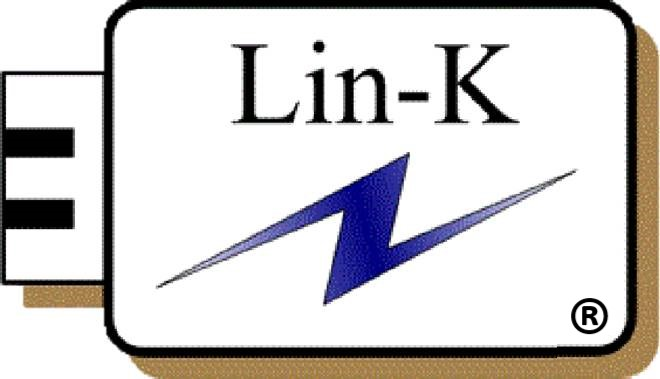

Toggle navigation
零刻科技股份有限公司
About
Products
HDMI
DP
USB
Type‑C
System Design
MacroSilicon IC
Application video
Download
Contact
MS9121 USB2.0→VGA
MS9122 USB2.0→HDMI
MS9123 USB2.0→CVBS
MS9125 USB2.0→VGA & HDMI
← Back to Download
Install Guide
1.Uninstall antivirus software or add to trust list
2.Plug the USB Display dongle
3.Run the driver setup software in USB Mass Storage Device
Driver Download
OS
MSDisplay_MultiDev_v1.0.1.60.exe
Windows、Android、Win XP
MSDisplay_MacOS_v1.0.2b_20201125.dmg
MacOS
4.Reboot the systerm
Contact Us
Lin-K Technology Co., Ltd.
新北市林口區文化一路一段135巷18號1樓
E-mail：
sales@lin-ker.com
Tel：+886-2-2600-3480